Python机器学习¶
约 1600 个字 211 行代码 10 张图片 预计阅读时间 8 分钟
神经网络与深度学习_邱锡鹏著_2020年.pdf
Pytorch常用API汇总(持续更新)_pytorch的api-CSDN博客
PyTorch | 广播机制（broadcast）_pytorch broadcast-CSDN博客
rasbt/machine-learning-book: Code Repository for Machine Learning with PyTorch and Scikit-Learn (github.com)
数据预处理¶
缺失值填充¶
pandas库
处理方法
- 删除
- 替代
- 插值
异常值检测和处理¶
异常值判断方法
- 标准化后＞2或3
- 分位数判断，上四分数QU，下四分数QL，超过QU+1.5(QU-QL)或低于QL-1.5(QU-QL)为异常点
- OneClassSVM，用训练集判断
数据标准化¶
scale标准化¶
xs转换后数据，x转换前数据，mean代表x平均值，std为x标准偏差，该方法适用于数据（近似）符合正态分布
算法建模¶
10大经典算法分类
- 有监督算法：朴素贝叶斯、决策树、随机森林、Adaboost、GBDT、KNN、支持向量机
- 无监督算法：K-means聚类、Apriori关联规则算法、Page
机器学习分类¶
三种类型：监督、无监督、强化
监督¶
分类（预测离散标签）¶
分类是监督学习的一个子任务
Example
| MNIST | |
|---|---|
1 2 3 4 5 6 7 8 9 10 11 12 13 14 15 16 17 18 19 20 21 22 23 24 25 26 27 28 29 30 31 32 33 34 35 36 37 38 39 40 41 42 43 44 45 46 47 48 49 50 51 52 53 54 55 56 57 58 59 60 61 62 63 64 65 66 67 68 69 70 71 72 73 74 75 76 77 78 79 80 81 82 83 84 85 86 87 88 89 90 91 92 93 94 95 96 97 98 99 100 101 102 103 104 105 106 107 108 109 110 111 112 113 114 115 116 117 118 119 120 121 122 123 124 125 126 127 128 129 130 131 132 133 134 135 136 137 138 139 | |
回归（预测连续数值标签）¶
无监督¶
没有正确答案和奖励函数，处理无标签的数据来探索规律
聚类¶
降维压缩¶
强化¶
学习一系列使奖励最大化的动作
例子：国际象棋
简单机器学习算法¶
感知机算法¶
Deep learning¶
data
三要素：模型 model、学习准则 criteria、优化算法
模型¶
模型\(f(x;θ)\)
机器学习的目标是找到一个模型来近似真是映射函数\(g(x)\)或真是条件概率分布\(p_r(y|x)\)
非线性模型
KL 散度、交叉熵
学习准则¶
期望风险
损失函数
平方、交叉熵、hinge
经验风险最小化 ERM
结构风险最小化 SRM：正则化防止过拟合
优化算法¶
（超）参数优化
（批量）梯度下降法 BGD：每次迭代时计算每个样本损失函数的梯度并求和
提前停止：防止过拟合
随机（增量）梯度下降法 SGD：抽 N 个样本，由它们计算出来的经验风险的梯度来近似期望风险的梯度
小批量梯度下降法：介于梯度下降法和随机梯度下降法之间
算法¶
前向传播：输入进去 网络做了什么计算
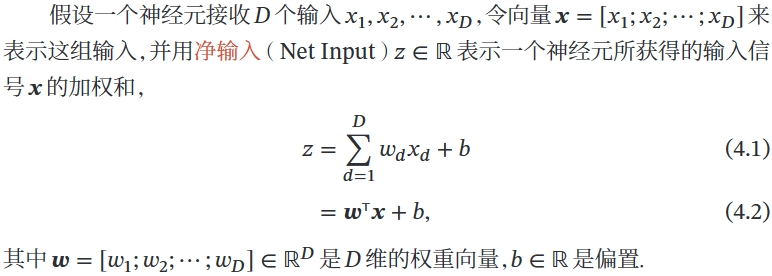
常用的激活函数¶
- Sigmoid，两端饱和函数
-
Logistic
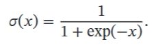
-
Tanh
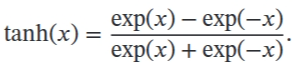
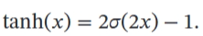
饱和定义对于函数 𝑓(𝑥)，若 𝑥 → −∞ 时，其导数 𝑓′(𝑥) → 0，则称其为左饱和．若 𝑥 → +∞ 时，其导数 𝑓′(𝑥) → 0，则称其为右饱和．当同时满足左、右饱和时，就称为两端饱和 -
Hard-Logistic & hard-Tanh 一阶泰勒展开的直线近似
- ReLU(PReLU)
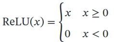
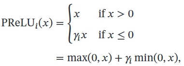
其中 𝛾𝑖 为 𝑥 ≤ 0 时函数的斜率．因此，PReLU 是非饱和函数．如果 𝛾𝑖 = 0，那么PReLU 就退化为 ReLU
- ELU
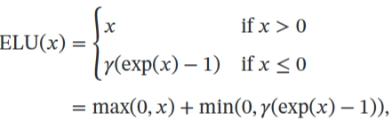
- Softplus

Softplus 函数其导数刚好是 Logistic 函数．Softplus 函数虽然也具有单侧抑制、宽兴奋边界的特性，却没有稀疏激活性
- Swish
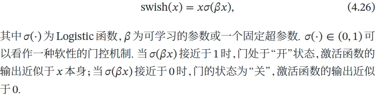
- GELU
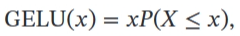
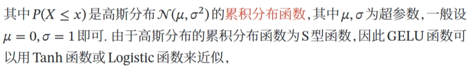
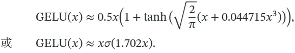
MLP（FNN）¶
多层感知器（MLP ）是现代前馈人工神经网络（ANN） 的名称，由具有非线性激活函数的完全连接的神经元组成，包含至少三层节点：输入层、一个或多个隐藏层和输出层。 一层中的每个节点或神经元以一定的权重连接到下一层中的每个节点，使网络完全连接。 MLP 使用称为反向传播的监督学习技术进行训练。 神经网络中的节点将非线性激活函数应用于从前一层接收的加权输入，然后将结果传递到下一层。 这种非线性使得 MLP 能够对输入和输出之间的复杂关系进行建模，而线性模型无法做到这一点。
MLP 可用于从计算机视觉到语音识别等领域的各种任务，例如分类、回归和特征学习。 MLP 的关键特征包括其深度（层数）、宽度（每层中的节点数）、激活函数（例如 sigmoid、tanh 或 ReLU）以及用于训练的优化算法（通常是某种形式的梯度下降）。 MLP 被认为是深度学习的基础架构，尽管卷积神经网络 (CNN) 和循环神经网络 (RNN) 等更复杂的网络分别更常用于涉及图像和序列数据的任务。
CNN¶
滤波器 Filter，又叫卷积核 Kernal
卷积神经网络是多层感知器的变体
CNN 的层具有按3 个维度排列的神经元：宽度、高度和深度。[71]卷积层内的每个神经元仅与其之前层的一小部分区域相连，称为感受野。不同类型的层（局部连接和完全连接）堆叠在一起形成 CNN 架构。
局部连接：遵循感受野的概念，CNN 通过在相邻层的神经元之间强制执行局部连接模式来利用空间局部性。因此，该架构确保学习到的“过滤器”对空间局部输入模式产生最强的响应。堆叠许多这样的层会导致非线性滤波器变得越来越全局（即响应像素空间的更大区域），以便网络首先创建输入的小部分的表示，然后从它们组装更大区域的表示。
共享权重：在 CNN 中，每个过滤器都会在整个视野中复制。这些复制的单元共享相同的参数化（权重向量和偏差）并形成特征图。这意味着给定卷积层中的所有神经元在其特定响应场内响应相同的特征。以这种方式复制单元允许所得到的激活图在视野中输入特征的位置移动的情况下是等变的，即它们授予平移等变性——假设该层的步幅为一。[72]
池化：在 CNN 的池化层中，特征图被划分为矩形子区域，每个矩形中的特征被独立下采样为单个值，通常采用平均值或最大值。除了减小特征图的大小之外，池化操作还为其中包含的特征赋予一定程度的局部平移不变性，从而使 CNN 对于其位置的变化更加 ROBUST。
评论区~
有用的话请给我个赞和 star =>